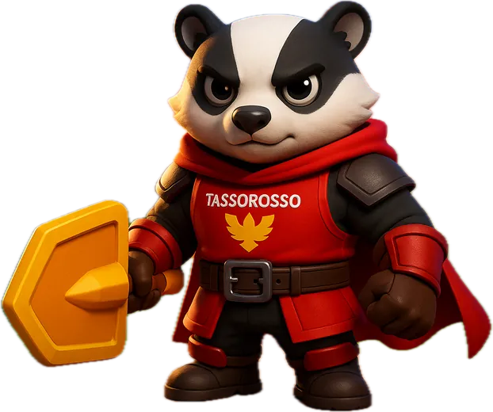

Usa i materiali riciclati per far crescere il campus. Non bastano per tutto: scegli che cosa viene prima.
Una settimana per trasformare i rifiuti della scuola in un campus più verde. Scegli la tua casata e comincia.